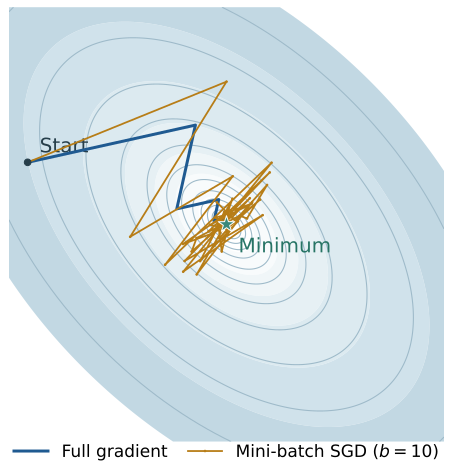
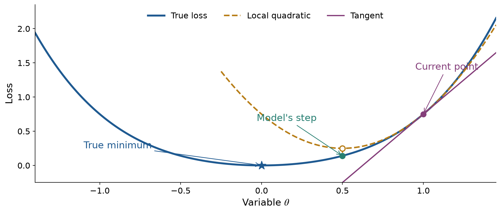
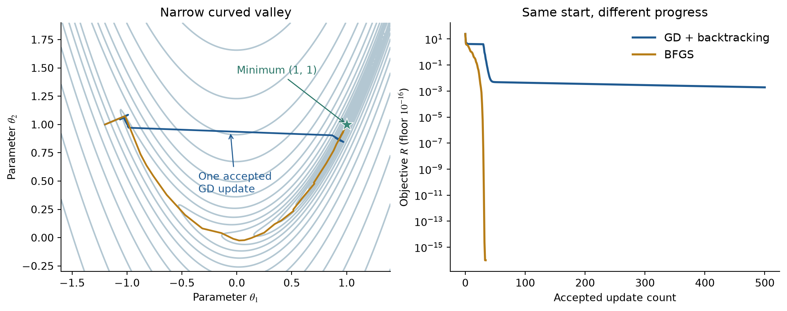
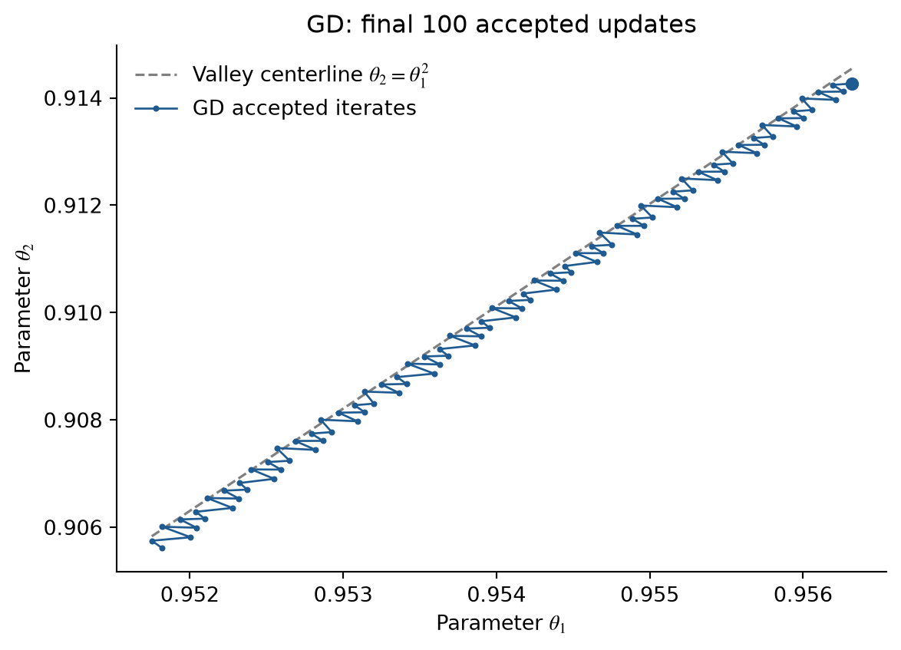
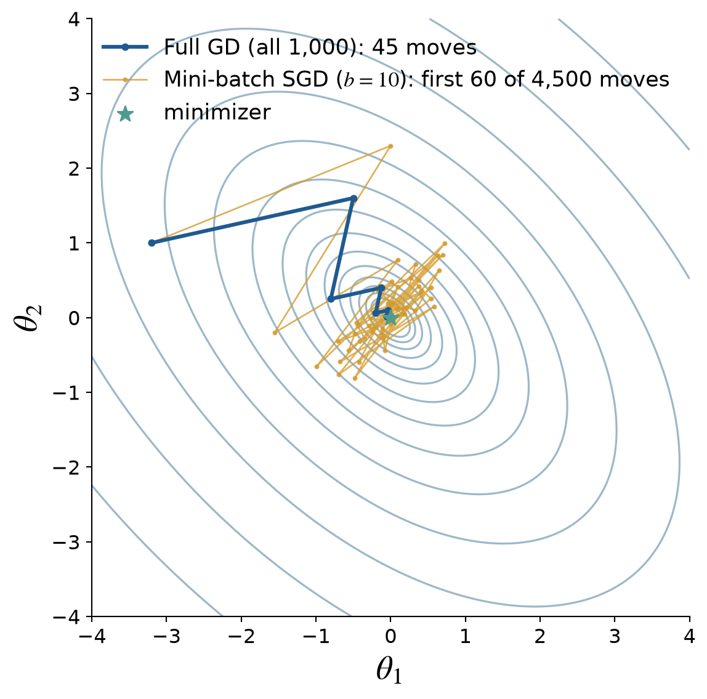
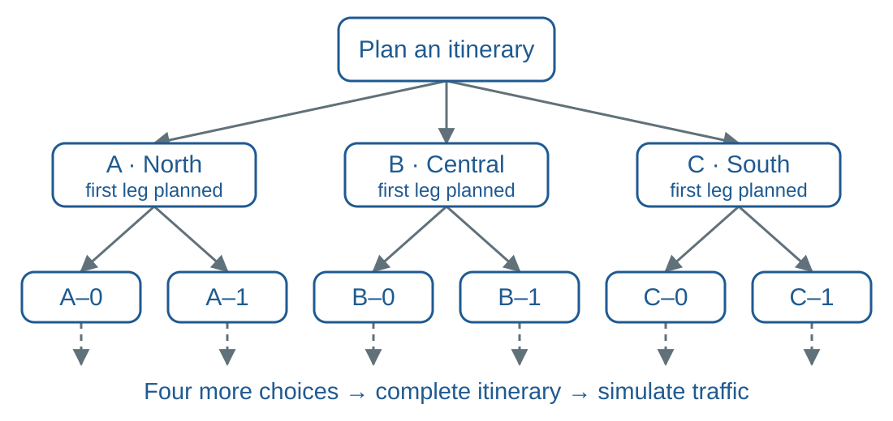
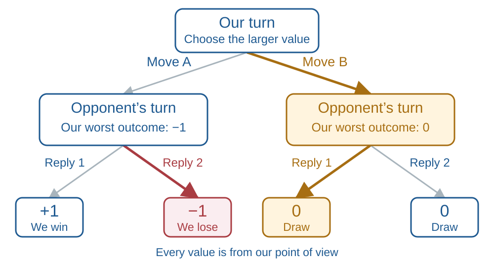
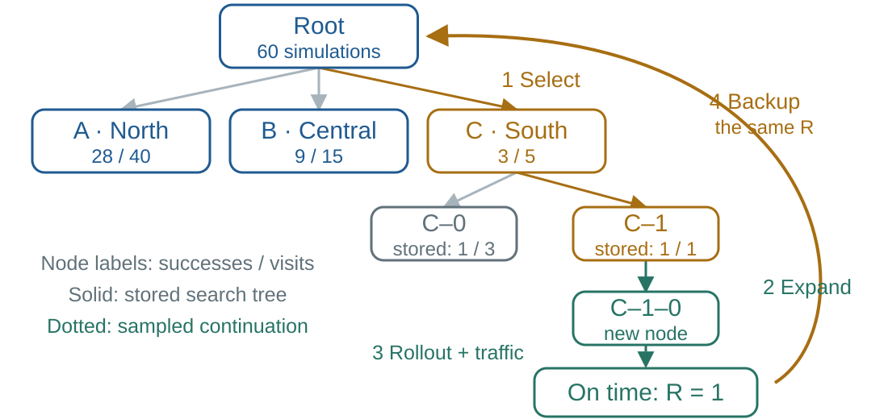

MATH 565 — Fall 2026
Selected Topics
Fred J. Hickernell
November 12, 2026
Course Map
Probability
Statistics
Analysis
Computer
Science
Science
Estimation
Error
Assessment
Assessment
Variance
Reduction
Reduction
Multilevel
Monte Carlo
Monte Carlo
Stochastic
Optimization
Optimization
Monte Carlo
Tree Search
Tree Search
High-Performance
Computing
Computing
Course decks
Choose how to compute, optimize, search, and allocate
Parallel Computing
Practice
Evaluate different sample points on several processors to reduce elapsed time
Parallel computing
Practice
Modern CPUs and GPUs can evaluate many operations concurrently
- Monte Carlo function values are often pleasingly parallel: samples can be evaluated independently
- Parallel random-number streams must remain nonoverlapping and statistically sound
- GPU arithmetic is often optimized for 32-bit floating point rather than 64-bit floating point
- Reduced precision may lose significant digits but can increase throughput substantially
- GPUs help most when there are many similar operations
Launch and data-transfer costs can dominate small problems
Parallelism changes computational cost
It does not repair biased estimators or poor sampling designs
CPU and GPU Monte Carlo
Practice
The prepared laptop demonstration compares
- NumPy CPU float64 and float32
- PyTorch CPU float32 and available GPU float32
- One expectation and many expectations evaluated in batches
Check the actual backend, include generation and evaluation, and synchronize GPU timing
A faster processor helps when the workload outweighs its overhead
Reading the CPU/GPU experiment
- Read speedup as CPU time / GPU time: above one favors the GPU
- Name the baseline: NumPy CPU64, NumPy CPU32, or Torch CPU32
The ratio compares complete implementations, including their random generators - Small jobs can favor CPUs; larger jobs spread fixed GPU overhead over more work
- Generation can dominate: inspect stage timings before attributing a gap to evaluation
End-to-end time determines the practical gain
Faster computation and statistical accuracy
Compare a baseline and a faster implementation: single-core / multicore CPU, or CPU / GPU
For fixed sampling method; runtime proportional to sample count
\[\begin{equation*} \left. \begin{aligned} s=\frac{\operatorname{time}_{\mathrm{baseline}}(n)}{\operatorname{time}_{\mathrm{faster}}(n)}>1 &\quad\implies\quad n_{\mathrm{faster}}\approx s\,n_{\mathrm{baseline}}\\ \operatorname{error}(n)\approx A n^{-p} &\quad\implies\quad \frac{\operatorname{error}(n_{\mathrm{faster}})}{\operatorname{error}(n_{\mathrm{baseline}})}\approx\frac1{s^p} \end{aligned} \right\} \quad\begin{gathered}\alerttext{for the same}\\\alerttext{time budget}\end{gathered} \end{equation*}\]
Error: RMSE for IID/RQMC; absolute-error bound for QMC
| Method | Power \(p\) | Conditions |
|---|---|---|
| IID | \(1/2\) | Finite contribution variance |
| QMC | \(\approx1\) | Sufficient smoothness and a suitable design |
| RQMC | \(\approx3/2\) | Sufficient smoothness and suitable scrambling |
Speedup \(s=16\): about \(1/4\) of the IID RMSE, \(1/16\) of the QMC bound, \(1/64\) of the RQMC RMSE
Computing many expectations together
- Reuse one sample batch across many functions to share generation cost and expose matrix work
- More expectations add outputs; each expectation still uses the same \(n\) samples
- Shared inputs give correlated estimates; their spread is not a standard error
- Batch samples and functions to bound memory; measure the useful workload and backend
More outputs can improve throughput without improving accuracy per output
Multilevel Monte Carlo
Estimation
Combine many cheap coarse samples with fewer correction samples to reduce the cost of accurately estimating an expectation with high dimensional random input
MLMC glossary: contributions
The same notation works for \(L=2\) or many levels
| Symbol | Meaning |
|---|---|
| \(\ell\), \(L\) | Level index and finest included level |
| \(d_\ell\), \(f_{d_\ell}\) | Resolution and approximate output function |
| \(Y_\ell\) | Cheap output at level 1; fine output minus coarse output at later levels |
| \(\mu_\ell\), \(\hmu_\ell\) | Contribution mean \(\Ex(Y_\ell)\) and its estimate |
| \(\mu_{d_L}\) | Mean of the finest approximation: \(\sum_\ell\mu_\ell\) |
| \(V_\ell\) | IID contribution variance \(\var(Y_\ell)\) |
MLMC glossary: samples and work
| Symbol | Meaning |
|---|---|
| \(n_\ell\), \(n=\sum_\ell n_\ell\) | Level sample count and total sample count |
| \(\$_\ell\) | Work for one complete contribution at level \(\ell\) |
| \(w_\ell\) | Sample allocation weight: \(n_\ell/n=w_\ell/\sum_k w_k\) |
Total work, for two or many levels
\[ C=n_1\$_1+n_2\$_2+\cdots+n_L\$_L =\sum_{\ell=1}^L n_\ell\$_\ell \]
\(C(\varepsilon)\) is the work needed at error tolerance \(\varepsilon\)
Sample counts and work shares differ
Two-level Monte Carlo
Estimation
We want to compute \(\Ex\bigl[f_{d}(\vX_{1:d})\bigr]\) for large \(d\)
But large \(d\) costs more, e.g., \(\$\bigl(f_d(\vX_{1:d})\bigr)\propto d\)
- Computational finance: \(d=\) time steps \(\times\) number of assets
- ODE/PDE models with random fields: \(d=\) grid points representing the field
Choose \(d_1\ll d_2=d\); couple the outputs to reduce the variance of their difference
\[\begin{align*} Y_1&=f_{d_1}(\vX_{1:d_1})& &\alerttext{cheap}\text{ approximation}\\ Y_2&=f_{d_2}(\vX_{1:d_2})-f_{d_1}(\vX_{1:d_1})& &\alerttext{expensive}\text{ correction} \end{align*}\]
\[ \mu=\Ex\{f_{d}(\vX_{1:d})\}=\Ex(Y_1)+\Ex(Y_2) \]
Estimate the cheap part often and the expensive correction less often, if its error is easier to control
Coupling coarse and fine Brownian paths
Choose nested monitoring grids on \([0,T]\) with \(d_2=\kappa d_1\), \(\kappa>1\)
- Order the Brownian values \(\vX\) with the coarse-grid values first
- Use a Brownian bridge to add values at the extra fine-grid times
For an option, \(f_{d_\ell}(\vX_{1:d_\ell})\) computes its discounted payoff
using the path values at \(d_\ell\) monitoring times
\[\begin{align*} Y_1&=f_{d_1}(\vX_{1:d_1})&&\alerttext{cheap}\text{ coarse payoff}\\ Y_2&=f_{d_2}(\vX_{1:d_2})-f_{d_1}(\vX_{1:d_1})&&\alerttext{expensive}\text{ payoff correction} \end{align*}\]
- Estimate \(\Ex(Y_1)\) from coarse-only paths
- Estimate \(\Ex(Y_2)\) from a separate independent set of bridge-refined paths
Same path, two payoffs in \(Y_2\); aim for small variance of their difference
Random two-level estimates: IID or RQMC
Estimate \(\mu_\ell=\Ex(Y_\ell)\) with uncorrelated level sample means: \(\operatorname{cov}(\hmu_1,\hmu_2)=0\)
Independent sample sets \(\{Y_{i,1}\}_{i=0}^{n_1-1}\) and \(\{Y_{i,2}\}_{i=0}^{n_2-1}\) ensure this condition
\[\begin{align*} \hmu&=\hmu_1+\hmu_2& \hmu_\ell&=\frac1{n_\ell}\sum_{i=0}^{n_\ell-1}Y_{i,\ell}\\ \var(\hmu)&=\var(\hmu_1)+\var(\hmu_2)& C&=n_1\$_1+n_2\$_2 \end{align*}\]
For unbiased level estimates, model \(\operatorname{RMSE}(\hmu_\ell)\approx A_\ell n_\ell^{-p}\)
\[ \operatorname{MSE}(\hmu) =\var(\hmu) \approx\frac{A_1^2}{n_1^{2p}}+\frac{A_2^2}{n_2^{2p}} \]
- IID: \(p=1/2\), \(A_\ell^2=\var(Y_\ell)\); the variance model is exact
- RQMC: \(p\) and \(A_\ell\) depend on smoothness, design, and randomization
Points within each sample set may be dependent
Allocating work optimally
Estimation
For independent unbiased random estimates, minimize the MSE model
\[ \frac{A_1^2}{n_1^{2p}}+\frac{A_2^2}{n_2^{2p}} \quad\text{subject to}\quad n_1\$_1+n_2\$_2=C \]
The optimal continuous allocation satisfies
\[ \frac{n_1}{n_2} =\left(\frac{A_1^2\$_2}{A_2^2\$_1}\right)^{1/(2p+1)} \]
IID (\(p=1/2\), \(A_\ell^2=V_\ell\)): sample allocation weights
\[ w_\ell=\frac{A_\ell}{\sqrt{\$_\ell}}=\sqrt{\frac{V_\ell}{\$_\ell}} \qquad\frac{n_1}{n_2}=\frac{w_1}{w_2} \qquad\frac{n_\ell}{n}=\frac{w_\ell}{w_1+w_2} \]
More points for larger error amplitude; fewer for larger cost per point
Deriving the two-level allocation
For the random case, treat \(n_1,n_2>0\) as continuous; fix total work \(C\)
\[ \underbrace{\mathcal L}_{\text{Lagrangian}} =\frac{A_1^2}{n_1^{2p}}+\frac{A_2^2}{n_2^{2p}} +\lambda(n_1\$_1+n_2\$_2-C) \]
\[\begin{align*} \frac{\partial\mathcal L}{\partial n_\ell}=0 &\implies\frac{2pA_\ell^2}{n_\ell^{2p+1}}=\lambda\$_\ell \qquad(\ell=1,2)\\ \frac{A_1^2}{\$_1n_1^{2p+1}} &=\frac{A_2^2}{\$_2n_2^{2p+1}} \implies\frac{n_1}{n_2} =\left(\frac{A_1^2\$_2}{A_2^2\$_1}\right)^{1/(2p+1)} \end{align*}\]
The sample allocation weights give
\[ w_\ell=\left(\frac{A_\ell^2}{\$_\ell}\right)^{1/(2p+1)} \qquad n_\ell=\frac{Cw_\ell}{\$_1w_1+\$_2w_2} =\frac{nw_\ell}{w_1+w_2} \]
At the optimum, each level buys the same marginal MSE reduction per unit work
IID: MSE decrease per unit work
Treat \(n_\ell>0\) as continuous; keep \(A_\ell,\$_\ell\) fixed
\[\begin{align*} \operatorname{MSE}_\ell&=\frac{A_\ell^2}{n_\ell} &\implies\quad \frac{\mathrm d\operatorname{MSE}_\ell}{\mathrm dn_\ell} &=-\frac{A_\ell^2}{n_\ell^2}\\ \operatorname{cost}_\ell&=n_\ell\$_\ell &\implies\quad \frac{\mathrm d\operatorname{cost}_\ell}{\mathrm dn_\ell}&=\$_\ell \end{align*}\]
The MSE decrease per unit work is the ratio of these derivatives
\[ -\frac{\mathrm d\operatorname{MSE}_\ell}{\mathrm d\operatorname{cost}_\ell} =-\frac{\mathrm d\operatorname{MSE}_\ell/\mathrm dn_\ell} {\mathrm d\operatorname{cost}_\ell/\mathrm dn_\ell} =\frac{A_\ell^2}{\$_\ell n_\ell^2} \]
IID: interpreting the optimal allocation
Write \(\operatorname{err}_\ell^2=\operatorname{MSE}_\ell\) and \(w_\ell=A_\ell/\sqrt{\$_\ell}\)
\[ -\frac{\mathrm d\operatorname{MSE}_\ell}{\mathrm d\operatorname{cost}_\ell} =\frac{A_\ell^2}{\$_\ell n_\ell^2} =\frac{\operatorname{err}_\ell^2}{\operatorname{cost}_\ell} =\left(\frac{w_\ell}{n_\ell}\right)^2 \]
If one level has a larger value, moving a little work to it lowers total MSE
At the optimum, both derivative magnitudes equal \(\lambda\)
\[ \left(\frac{w_1}{n_1}\right)^2 =\left(\frac{w_2}{n_2}\right)^2=\lambda \implies\frac{n_1}{n_2}=\frac{w_1}{w_2} \]
Optimal allocation equalizes the MSE decrease per unit work
Deterministic two-level estimates
Use QMC separately for the same cheap part and coupled correction
Assume justified absolute-error bounds with a common \(p>0\)
\[\begin{align*} \abs{\hmu_\ell-\mu_\ell}&\le\frac{A_\ell}{n_\ell^p}\\ \abs{\hmu-\mu} &\le\abs{\hmu_1-\mu_1}+\abs{\hmu_2-\mu_2} \le\frac{A_1}{n_1^p}+\frac{A_2}{n_2^p} \end{align*}\]
At fixed work \(n_1\$_1+n_2\$_2=C\), minimize the bound
\[ w_\ell=\left(\frac{A_\ell}{\$_\ell}\right)^{1/(p+1)} \qquad\frac{n_1}{n_2}=\frac{w_1}{w_2} =\left(\frac{A_1\$_2}{A_2\$_1}\right)^{1/(p+1)} \]
QMC needs sufficient smoothness and a suitable design
Bound total error by the sum of the level error bounds
What two levels accomplish
- \(d_1\ll d_2\): the coarse approximation can be much cheaper
- Coupling can make the expensive correction easier to integrate
- Allocate points using the error amplitudes, rates, and complete evaluation costs
- IID/RQMC: independent unbiased level estimates add variances
- Deterministic QMC: level error bounds add by an inequality
- Fix the target dimension \(d_2\); increase \(n_1,n_2\) to control integration error
Two levels help when the cheap approximation and small correction error earn their combined cost
Two-level random cost as a function of error
Fix grids, amplitudes, and costs; use the IID or RQMC model with common \(p>0\)
Scale the optimal counts together: \(n_1=t w_1\), \(n_2=t w_2\), \(t>0\)
From the optimal-weight definition: \(A_1^2=\$_1w_1^{2p+1}\) and \(A_2^2=\$_2w_2^{2p+1}\)
\[\begin{align*} S&=\$_1w_1+\$_2w_2 \qquad C=n_1\$_1+n_2\$_2=tS\\ \operatorname{MSE}(\hmu) &\approx\frac{A_1^2}{(tw_1)^{2p}}+\frac{A_2^2}{(tw_2)^{2p}}\\ &=\frac{\$_1w_1^{2p+1}}{t^{2p}w_1^{2p}} +\frac{\$_2w_2^{2p+1}}{t^{2p}w_2^{2p}} =\frac{\$_1w_1+\$_2w_2}{t^{2p}}=\frac{S}{t^{2p}} \end{align*}\]
\[ \operatorname{RMSE}(\hmu)\approx\frac{\sqrt S}{t^p}\approx\varepsilon \implies t\approx\left(\frac{\sqrt S}{\varepsilon}\right)^{1/p} \]
\[ C(\varepsilon)=tS \approx S\left(\frac{\sqrt S}{\varepsilon}\right)^{1/p} =S^{1+1/(2p)}\varepsilon^{-1/p} \]
When does two-level IID save work?
Compare estimates of the same fine target \(\mu\) at RMSE \(\varepsilon\)
Direct fine contributions have variance \(V\) and complete per-sample work \(\$\)
\[ C_{\mathrm{single}}(\varepsilon)=\frac{V\$}{\varepsilon^2} \qquad C_{\mathrm{two}}(\varepsilon) =\frac{\left(\sqrt{V_1\$_1}+\sqrt{V_2\$_2}\right)^2}{\varepsilon^2} \]
With optimal two-level allocation, we save work precisely when
\[ \left(\sqrt{V_1\$_1}+\sqrt{V_2\$_2}\right)^2<V\$ \]
The same \(\varepsilon^{-2}\) factor cancels; compare the cost constants
Why the two-level cost constant can be smaller
On one shared path, the fine payoff is \(Y_1+Y_2\), so
\[ V=\var(Y_1+Y_2)=V_1+V_2+2\sqrt{V_1V_2}\corr(Y_1,Y_2) \]
- If coupling makes \(V_2\ll V_1\), then \(V\approx V_1\)
- If the extra coarse work is small, then \(\$_2\approx\$\)
Under these approximations,
\[ \frac{C_{\mathrm{two}}(\varepsilon)}{C_{\mathrm{single}}(\varepsilon)} \approx \left(\sqrt{\frac{\$_1}{\$_2}}+\sqrt{\frac{V_2}{V_1}}\right)^2 \]
Cheap coarse work and small correction variance can make this ratio less than one
Single-level and two-level work versus error
Fix the grids and fine target; assume the same RMSE decay power \(p\)
\[ C_{\mathrm{single}}(\varepsilon)\propto\varepsilon^{-1/p} \qquad C_{\mathrm{two}}(\varepsilon)\propto\varepsilon^{-1/p} \]
| Either strategy | Halve the RMSE | Divide the RMSE by \(10\) |
|---|---|---|
| IID: \(p=1/2\) | \(4\times\) total work | \(100\times\) total work |
| Illustrative RQMC: \(p=1\) | \(2\times\) total work | \(10\times\) total work |
Two-level IID example: \(V_1=16\), \(V_2=1\), \(\$_1=1\), \(\$_2=16\)
\[ C_{\mathrm{two}}(\varepsilon)=64\varepsilon^{-2} \qquad C_{\mathrm{two}}(0.1)=6400\quad C_{\mathrm{two}}(0.05)=25600 \]
Here, two levels use less work if \(V\$>64\)
Allocate two levels: points versus work
For independent IID level means, take \(p=1/2\) and total work \(C=3200\)
| Quantity | Cheap level 1 | Correction level 2 |
|---|---|---|
| Contribution variance \(V_\ell\) | \(16\) | \(1\) |
| Cost per contribution \(\$_\ell\) | \(1\) | \(16\) |
\(\exstar\) Find the optimal ratio \(n_1/n_2\) and the point counts \(n_1,n_2\) How much work goes to each level? Do fewer correction samples imply less correction work?
Multilevel option pricing in code
Multilevel Option Pricing — notebook · Open in Colab
- Couple coarse and fine Brownian paths for the same Asian-option model
- Compare point counts and work under equal and optimal allocations
- Compare direct fine estimates, IID MLMC, and randomized Sobol’ MLQMC
- Charge for pilots and keep sampling error separate from approximation bias
More samples reduce integration error; finer grids address approximation bias
A hierarchy of coupled approximations
Estimation
Repeat the two-level idea on grids \(d_1<d_2<\cdots<d_L\)
\[\begin{align*} Y_1&=f_{d_1}(\vX_{1:d_1})\\ Y_\ell&=f_{d_\ell}(\vX_{1:d_\ell}) -f_{d_{\ell-1}}(\vX_{1:d_{\ell-1}}),\qquad \ell\ge2 \end{align*}\]
The means telescope to the finest approximation
\[ \mu_{d_L}=\Ex\{f_{d_L}(\vX_{1:d_L})\} =\sum_{\ell=1}^L\Ex(Y_\ell) \]
One cheap approximation plus differences of coupled fine/coarse pairs
Sampling error and approximation bias
For an infinite-resolution target, distinguish the limit from the finest approximation
\[\begin{align*} \mu&=\lim_{d\to\infty}\Ex\{f_d(\vX_{1:d})\}\\ b_L&=\mu-\mu_{d_L} \qquad\text{remaining approximation bias} \end{align*}\]
Independent unbiased level estimates give \(\Ex(\hmu)=\mu_{d_L}\), so
\[ \operatorname{MSE}(\hmu)=b_L^2+\sum_{\ell=1}^L\var(\hmu_\ell) \]
- More samples reduce sampling error
- Refine the finest grid to reduce approximation bias
At fixed \(L\), more samples cannot remove \(b_L\)
Optimal multilevel allocation
Estimation
For IID, the same allocation result holds for any number of levels
\[ w_\ell=\sqrt{\frac{V_\ell}{\$_\ell}} \qquad \frac{n_\ell}{n}=\frac{w_\ell}{\sum_{k=1}^L w_k} \]
- More samples where contribution variance is larger
- Fewer samples where each contribution costs more
- Choose the total count to meet the work budget \(C\)
The optimum equalizes MSE reduction per unit work across levels
Why telescoping helps
Estimation
For a fixed finest grid, the optimal IID sampling cost is
\[ C(\varepsilon_{\mathrm s})=\frac{\left(\sum_{\ell=1}^L\sqrt{V_\ell\$_\ell}\right)^2}{\varepsilon_{\mathrm s}^2} \]
For total RMSE \(\varepsilon\), reserve \(\varepsilon_{\mathrm s}^2=\varepsilon^2-b_L^2>0\) for sampling error
Coupling helps when correction variances shrink fast enough to offset their higher cost
| To reduce | Change |
|---|---|
| Sampling error | Sample counts |
| Approximation bias | Finest grid |
Small fine-level terms in the sum can make extra resolution affordable
Cost versus accuracy: IID
Now refine the final grid as the target RMSE \(\varepsilon\) shrinks to control approximation bias
Two examples: each refinement halves bias and makes a contribution cost \(4\times\) as much
| Correction variance per refinement | Most work | \(C(\varepsilon)\) |
|---|---|---|
| Divided by \(8\) | Coarse levels | \(\propto\varepsilon^{-2}\) |
| Divided by \(2\) | Fine levels | \(\propto\varepsilon^{-3}\) |
The cost exponent depends on how fast correction variance falls compared with growing work and required refinement
Multilevel in practice
- For IID, use pilot runs to measure correction variance and complete cost, then allocate samples
- Assess remaining approximation bias; one small correction does not bound the omitted tail
- QMC can improve sampling accuracy when coupling preserves suitable smoothness
- Count pilots, setup, and allowed sample sizes in the total work
- With cheap evaluations, sampling and setup overhead can outweigh the saved evaluation work: MLMC may take longer in clock time
Compare the option-pricing notebook and beam notebook to inspect allocation and bias
Stochastic Gradient Descent
Stochastic
Optimization
Optimization
Sample a few observations per update for cheap optimization moves, while controlling gradient noise
Optimize a loss function
Stochastic
Optimization
Optimization
Choose \(m\) parameters \(\vtheta\) to make loss small
\[\begin{equation*} \vtheta_*\in\argmin_{\vtheta\in\reals^m}\operatorname{Loss}(\vtheta) \end{equation*}\]
- Start from a guess; use local information to improve it
- Gradient: which direction is downhill?
- Curvature: how far should we move?
- Conditioning: how unequal is curvature across directions?
- Cost: could sampled loss terms give a cheaper gradient estimate?
- An exact local direction usually does not solve the whole problem
Optimization usually needs many moves; compare their total cost
Local models guide a move
For one parameter, approximate the loss near the current \(\theta\)
\[\begin{equation*} q(s)=\operatorname{Loss}(\theta)+g s+\tfrac12 h s^2 \qquad g=\operatorname{Loss}'(\theta),\quad h=\operatorname{Loss}''(\theta) \end{equation*}\]

Newton chooses \(s=-g/h\) when \(h>0\); then rebuild the local model
Challenges even in one-dimensional optimization
| Challenge | What changes? | Consequence for optimization |
|---|---|---|
| Nonquadraticity | Curvature changes with position | Refresh the local model; shorten or safeguard a proposed step |
| Nonconvexity | A stationary point need not be globally optimal | Try multiple starts and compare losses; no global guarantee |
Rebuild local models and compare starting points; local information has limits
Gradient descent avoids the full Hessian
\[\begin{gather*} \vg_k=\nabla\operatorname{Loss}(\vtheta_k) \qquad \mH_k=\nabla^2\operatorname{Loss}(\vtheta_k) \\ \vtheta_{k+1}=\vtheta_k-\eta_k\vg_k \qquad \eta_k>0\text{ is the learning rate} \end{gather*}\]
| Method | Direction | Generic dense storage / solve |
|---|---|---|
| Gradient descent | \(-\eta_k\vg_k\) | \(m\) gradient entries; no Hessian solve |
| Newton | Solve \(\mH_k\vs=-\vg_k\) | \(O(m^2)\) storage; \(O(m^3)\) solve |
- GD is reasonable when curvature information is too costly
- A small enough step decreases a smooth loss with nonzero gradient
Other optimization methods
| Method | Information used | When to consider it |
|---|---|---|
| Downhill simplex (Nelder–Mead) | Loss at \(m+1\) vertices | Modest \(m\); derivatives unavailable |
| Newton / trust-region | Gradients and curvature | Affordable local models |
| BFGS / L-BFGS | Gradients and previous steps | Curvature without a full Hessian |
| Momentum / accelerated gradient | Gradients and past motion | Improve first-order progress |
Choose a direction method, then ask how much each move costs
Geometry still matters
| Feature | Meaning | Practical response |
|---|---|---|
| Nonquadraticity | Curvature changes as we move | Recompute directions; safeguard steps |
| Nonconvexity | Zero gradient need not mean a global minimum | Compare starts; no general global guarantee |
| Poor conditioning | Curvature differs greatly by direction | Scale, precondition or use curvature |
For a convex loss, a zero gradient identifies a global minimizer
For a quadratic loss with positive-definite Hessian \(\mH\)
\(\kappa(\mH)=\lambda_{\max}(\mH)/\lambda_{\min}(\mH)\) measures conditioning
Cheap moves help with cost; they do not remove difficult geometry
The banana function is still difficult
\[R(\vtheta)=(1-\theta_1)^2+100(\theta_2-\theta_1^2)^2 \qquad \vtheta_*=(1,1)^\top\]

Unequal and changing curvature can slow GD even with only two parameters
A closer look at curvature and conditioning

- Steep across the valley; shallow along it
- The valley direction changes as we move
- Short accepted GD moves can zigzag
- BFGS uses curvature to change direction and scale
At the minimizer: \(m=2\), \(\kappa\approx2508\)
Every dot is one accepted GD update
Sampling makes gradients cheaper; it does not remove poor conditioning
Challenges so far: several variables
| Challenge | What changes? | Consequence for optimization |
|---|---|---|
| Nonquadraticity | Curvature changes with position | Refresh the local model; shorten or safeguard a proposed step |
| Nonconvexity | A stationary point need not be globally optimal | Try multiple starts and compare losses; no global guarantee |
| Hessian cost | Dense storage \(O(m^2)\); solve \(O(m^3)\) | Use first-order or limited-memory methods when full curvature costs too much |
| Conditioning | Curvature differs across directions | Scale or precondition variables; consider curvature information |
First-order methods save Hessian work; the geometry still affects convergence
When the full loss is expensive
Stochastic
Optimization
Optimization
With \(N\) observations, a common objective is a finite average
\[\begin{equation*} \operatorname{Loss}(\vtheta)=\frac1N\sum_{i=0}^{N-1}\operatorname{loss}_i(\vtheta) \end{equation*}\]
For dense regression models with \(m\) parameters
| Calculation | Direct work |
|---|---|
| One observation’s loss or gradient | \(O(m)\) |
| Full loss or full gradient | \(O(Nm)\) |
Many full-data moves mean many expensive passes
Could we sample the \(\operatorname{loss}_i\) terms rather than average all \(N\) at every move?
Challenges before sampling the gradient
| Challenge | What changes? | Consequence for optimization |
|---|---|---|
| Nonquadraticity | Curvature changes with position | Refresh the local model; shorten or safeguard a proposed step |
| Nonconvexity | A stationary point need not be globally optimal | Try multiple starts and compare losses; no global guarantee |
| Hessian cost | Dense storage \(O(m^2)\); solve \(O(m^3)\) | Use first-order or limited-memory methods when full curvature costs too much |
| Conditioning | Curvature differs across directions | Scale or precondition variables; consider curvature information |
| Full-gradient cost | Direct data pass \(O(Nm)\) | Reuse structure or sample fewer terms; small \(m\) can still favor Newton |
First-order methods save Hessian work; sampling can reduce full-gradient work
Cheap sampled updates
Stochastic
Optimization
Optimization
Full gradient: \(\vg_k=\nabla\operatorname{Loss}(\vtheta_k)\); sampled estimate: \(\vG_k\)
Sample \(b\) loss terms using fresh IID indices \(I_{k0},\ldots,I_{k,b-1}\) uniform on \(\{0,\ldots,N-1\}\)
\[\begin{gather*} \vG_k=\frac1b\sum_{j=0}^{b-1}\nabla\operatorname{loss}_{I_{kj}}(\vtheta_k) \\ \vtheta_{k+1}=\vtheta_k-\eta_k\vG_k \qquad \Ex[\vG_k\mid\vtheta_k]=\vg_k \end{gather*}\]
- \(b=1\): single-observation SGD; \(b>1\): mini-batch SGD
- Take each sampled loss term’s gradient at the same current iterate; average them
- Work per move: \(O(bm)\) instead of \(O(Nm)\)
- No full-loss acceptance test; an individual move may make the loss worse
Differentiate the sampled loss terms, average their gradients, then take a cheap update
The gradient estimate is Monte Carlo
One uniform \(U\sim\Unif[0,1)\) selects one whole observation: \(I=\lfloor NU\rfloor\)
\[\begin{gather*} \widetilde{\vg}_{\vtheta}(u)=\nabla\operatorname{loss}_{\lfloor Nu\rfloor}(\vtheta) \\ \int_0^1\widetilde{\vg}_{\vtheta}(u)\,\dif u =\nabla\operatorname{Loss}(\vtheta) \qquad \vG_k=\frac1b\sum_{j=0}^{b-1}\widetilde{\vg}_{\vtheta_k}(U_{kj}) \end{gather*}\]
| Count | Meaning |
|---|---|
| \(N\) | Observations in the fixed dataset |
| \(m\) | Entries in each gradient; parameters we update |
| \(b=d\) | Independent indices in one mini-batch; dimension of the draw |
Sample observation indices; average their \(m\)-component gradients
Noise near the solution
Stochastic
Optimization
Optimization
For \(\operatorname{loss}_i(\theta)=\tfrac12(\theta-a_i)^2\), with \(a_i=\pm1\) equally often
\[\begin{equation*} \operatorname{Loss}(\theta)=\tfrac12(\theta^2+1) \qquad \theta_*=0 \qquad \operatorname{Loss}'(0)=0 \end{equation*}\]
But the individual gradients at \(0\) are \(+1\) and \(-1\)
- The full gradient can vanish while sampled gradients keep fluctuating
- Averaging \(b\) independent gradients divides their noise variance by \(b\)
- Finer accuracy may need a larger batch, a smaller rate, or averaging iterates
Do not wait for each sampled gradient to become zero
Sampling saves work and introduces noise
| Challenge | What changes? | Consequence for optimization |
|---|---|---|
| Nonquadraticity | Curvature changes with position | Refresh the local model; shorten or safeguard a proposed step |
| Nonconvexity | A stationary point need not be globally optimal | Try multiple starts and compare losses; no global guarantee |
| Hessian cost | Dense storage \(O(m^2)\); solve \(O(m^3)\) | Use first-order or limited-memory methods when full curvature costs too much |
| Conditioning | Curvature differs across directions | Scale or precondition variables; consider curvature information |
| Full-gradient cost | Direct data pass \(O(Nm)\) | Reuse structure or sample fewer terms; small \(m\) can still favor Newton |
| Gradient noise | Random direction estimates | Use mini-batches, smaller steps or averaging for finer accuracy |
Gradient and stochastic-gradient paths
Toy objective: \(m=2\) parameters, average of \(N=1{,}000\) loss terms
Equal component-gradient work: 45 GD moves versus 4,500 mini-batch moves
45,000 contributions each: 1,000 per GD move; 10 per SGD move (\(b=10\))
Common rate \(\eta=0.5\); picture shows first 60 mini-batch moves (600 contributions)

Monitor progress between blocks of moves
Stochastic
Optimization
Optimization
- Choose a batch size, learning-rate schedule and accuracy goal or budget
- Make many cheap updates without evaluating the full loss
- Periodically compare loss on the same randomly selected diagnostic subset of \(s\) observations, typically \(b\ll s\ll N\)
- If progress is poor, adjust the rate or batch size for the next block
- Stop when the accuracy check passes or the work budget is spent
Use periodic evidence to guide the run; small movement alone is weak evidence
Count monitoring in the cost
For \(K\) updates, \(J_s\) diagnostic checks and \(J_N\) full-loss checks
\[\begin{equation*} \text{direct training work}=O\bigl(m(Kb+J_s s+J_N N)\bigr) \end{equation*}\]
| Check | Cost | Purpose |
|---|---|---|
| Loss on the same \(s\) randomly selected observations | \(O(sm)\) | Estimate training-loss progress |
| Full training loss | \(O(Nm)\) | Measure the empirical objective |
| Held-out validation loss | Depends on validation size | Check predictive performance |
- One diagnostic check: work comparable to about \(s/b\) updates
- One full check: work comparable to about \(N/b\) updates
Pay for checks after many moves, with cheaper diagnostics between
Choose how small the full gradient should be
Full gradient: \(\vg_k=\nabla\operatorname{Loss}(\vtheta_k)\); sampled update direction: \(\vG_k\)
Choose a stationarity target \(\norm{\vg_k}\leq\tau\), with \(\tau>0\)
| Evidence at a checkpoint | What can we conclude? |
|---|---|
| Tiny move or loss plateau | May reflect a small rate or unresolved noise |
| Full-gradient norm at most \(\tau\) | The stationarity target is met; costs \(O(Nm)\) |
| Sampled \(\vG_k\) | Its norm plus justified uncertainty must be at most \(\tau\) |
- Choose \(\tau\) to match the application’s precision and parameter scaling
- If uncertainty is too large, enlarge the checking batch or use the full gradient
- Small gradient means approximate stationarity; optimality needs assumptions
A large-data example
Stochastic
Optimization
Optimization
Estimation
Binary observation \(y_i\in\{0,1\}\); predictor \(z_i=\vx_i^\top\vtheta\)
\[\begin{gather*} p_i(\vtheta)=\Prob_{\vtheta}(Y_i=1\mid\vx_i) =\frac{1}{1+e^{-z_i}} \end{gather*}\]
| Observed label | Probability assigned to that label |
|---|---|
| \(y_i=1\) | \(p_i\) |
| \(y_i=0\) | \(1-p_i\) |
Combine the two cases: \(q_i(\vtheta)=p_i^{y_i}(1-p_i)^{1-y_i}\)
For independent labels, maximize their likelihood
\[\max_{\vtheta}\prod_i q_i(\vtheta) \quad\Longleftrightarrow\quad \min_{\vtheta}\sum_i[-\log q_i(\vtheta)]\]
Derive the logistic loss
The negative log likelihood for one observation is
\[\ell_i^{\mathrm{data}}=-\log q_i =-y_i\log p_i-(1-y_i)\log(1-p_i)\]
Substitute \(p_i=e^{z_i}/(1+e^{z_i})\)
\[\begin{align*} \log p_i&=z_i-\log(1+e^{z_i})\\ \log(1-p_i)&=-\log(1+e^{z_i}) \end{align*}\]
Therefore
\[\begin{align*} \ell_i^{\mathrm{data}} &=-y_i z_i+[y_i+(1-y_i)]\log(1+e^{z_i})\\ &=\log(1+e^{z_i})-y_i z_i \end{align*}\]
At \(p_i=0.9\): loss \(0.105\) for label 1; loss \(2.303\) for label 0
Regularization and the gradient
Add a separate quadratic penalty to the mean data loss
\[F(\vtheta)=\frac1N\sum_{i=0}^{N-1}\ell_i^{\mathrm{data}}(\vtheta) +\frac\lambda2\norm{\vtheta}^2\]
First differentiate with respect to \(z_i=\vx_i^\top\vtheta\)
\[\frac{\dif\ell_i^{\mathrm{data}}}{\dif z_i} =\frac{e^{z_i}}{1+e^{z_i}}-y_i=p_i-y_i\]
With \(\operatorname{loss}_i=\ell_i^{\mathrm{data}}+(\lambda/2)\norm{\vtheta}^2\), the chain rule gives
\[\nabla\operatorname{loss}_i(\vtheta) =(p_i-y_i)\vx_i+\lambda\vtheta\]
- Average these component gradients for the full gradient
- Average a sampled batch for SGD
- Penalizing every coefficient with \(\lambda>0\) gives a unique minimizer
Learning rates in the logistic experiment
Let \(X\) have rows \(\vx_i^\top\); the notebook uses the global curvature bound
\[L_{\mathrm{bound}}=\lambda_{\max}\!\left(\frac{X^\top X}{4N}\right)+\lambda\]
| Method | Implemented learning rate |
|---|---|
| Full GD | \(1/L_{\mathrm{bound}}\), computed once for the fixed dataset |
| Fixed mini-batch SGD | \(\eta=0.3\) |
| Decaying single-observation or mini-batch SGD | \(\eta(w)=0.3/(1+w/(0.25N))\) |
- \(w\): observation-gradient work already used before the update
- The decaying rate is \(0.15\) after a quarter equivalent pass and \(0.06\) after one pass
- The SGD rates are illustrative settings to review and tune
- The reference minimum is for comparing results; the optimizer does not know it
One dataset, several accuracy targets
One fixed logistic dataset: \(N=262{,}144\), \(m=20\), \(b=256\), \(s=1{,}024\)
Median equivalent passes to the first recorded loss-gap target
| Loss-gap target | Full GD | Fixed SGD | Decaying SGD |
|---|---|---|---|
| \(10^{-3}\) — useful answer | \(2\) | \(0.059\) | \(0.066\) |
| \(10^{-4}\) | \(3\) | — | \(2.04\) |
| \(10^{-6}\) — finer answer | \(6\) | — | — |
- Same data and start; five repeats per method; — means unreached in eight passes
- At \(10^{-3}\): SGD uses less gradient work and measured update time
- At \(10^{-4}\): decay uses fewer contributions, but GD is faster here
- Compare at the same useful accuracy; include setup and checking costs
GD and SGD compared
Stochastic
Optimization
Optimization
Same average loss; both choose a direction and a learning rate
| Feature | Full GD | Mini-batch SGD |
|---|---|---|
| Direction | Full gradient \(\vg_k\) | Sampled \(\vG_k\): unbiased, noisy |
| Learning rate, \(\eta_k\) | Expand and backtrack using the full loss | Short pilots; then use a fixed or decaying schedule |
| Update work | All \(N\) terms: \(O(Nm)\) | Sample \(b\) terms: \(O(bm)\) |
| Total work | \(O(K_{\mathrm{GD}}Nm)+C_{\mathrm{GD}}\) | \(O(K_{\mathrm{SGD}}bm)+C_{\mathrm{SGD}}\) |
| Near minimum | \(\vg_k\) approaches zero | Noise can persist at fixed \(b\) |
| Reduce noise effect | No sampling noise | Smaller steps, larger batches or variance reduction |
| Check progress | Full-gradient norm or loss | Periodic checks with noise assessment |
\(K\): each method’s updates to the target; \(C\): setup, tuning and all checking work
Both face difficult geometry; compare total work and time at the same accuracy
Beyond SGD
Stochastic
Optimization
Optimization
| Research direction | Contribution | Link to SGD |
|---|---|---|
| Derivative-free optimization | Rates and limits for gradient estimates from function values | Randomness can estimate a direction without derivatives |
| Accelerated methods | A variational, continuous-time framework | Understand and design methods using momentum |
| Escape from saddle points | Guarantees for deliberately perturbed gradient descent | Randomness can also help leave a saddle |
Sampling data, estimating derivatives, and perturbing iterates serve different purposes
Gradient descent companion notebook
Open Stochastic Gradient Descent on GitHub · Run in Colab
- Part 1: banana-valley paths and backtracking; Part 2: optional curvature calculations
- Parts 3–4: optional variance, expected-descent and noise-floor calculations
- Parts 5–6: logistic regression at equal component work and measured time
- Sampled/full-loss diagnostics and the final gradient check have separate timers
\(\exstar\) Increase \(N\) with \(m\) fixed; then tighten the requested accuracy When do cheap updates help, and when does noise limit useful progress?
Monte Carlo Tree Search
Monte Carlo
Tree Search
Tree Search
Simulate possible futures to focus a limited search budget on promising actions
Choose an action by simulating futures
Monte Carlo
Tree Search
Tree Search
Choose an airport itinerary before departure; traffic makes arrival uncertain

- Nodes: partial plans; branches: the next route choice
- Six segments give \(3\times2^5=96\) plans; twenty give \(3\times2^{19}>1.5\) million
- Spend a limited simulation budget on promising continuations
Specify a travel-time model
The notebook declares synthetic segment distributions in minutes
| First road | Base time | Extra delay | Delay probability |
|---|---|---|---|
| A · North | 10 | 26 | 0.35 |
| B · Central | 13 | 13 | 0.22 |
| C · South | 16 | 7 | 0.10 |
For North’s first segment, \[\begin{equation*} T_A=\begin{cases}10 & \text{with probability }0.65\\36 & \text{with probability }0.35\end{cases} \end{equation*}\]
- A fixed itinerary has a random total time; each trial draws fresh traffic
- Search also samples unfinished route choices
- A real application needs a simulator fitted to travel-time observations
Turn simulated trips into values
For a complete plan \(p\), simulate its total travel time \(T(p)\) in minutes
With deadline \(D=80\) minutes, record the return
\[\begin{equation*} R=\begin{cases}1 & \text{arrive by the deadline}\\0 & \text{arrive late}\end{cases} \qquad \mu(p)=\Ex(R)=\Prob\bigl(T(p)\leq D\bigr) \end{equation*}\]
At a stored branch, keep successes \(W\) and visits \(N\)
\[\begin{equation*} \overline Q=\frac{W}{N} \qquad \frac{28\text{ on-time trips}}{40\text{ simulations}}=0.70 \end{equation*}\]
- A rollout: complete the remaining choices, then simulate the trip
- Early rollouts use simple random choices; deeper search can improve the continuations
A branch’s average summarizes the continuations tried so far
Deterministic games and search
Chess has deterministic moves; this toy game shows why replies matter

- Our turns seek high values; opposing turns seek low values from our viewpoint
- Random rollouts explore a small part of a huge, deterministic game tree
Where MCTS is used
| Application | Search decisions | Good outcome |
|---|---|---|
| AlphaGo and AlphaZero | Legal moves in Go; also chess and shogi for AlphaZero | Win the game |
| Navigation | Sailing directions under uncertain wind | Reach the destination at low travel cost |
| AlphaTensor | Steps in a matrix multiplication algorithm | Correct result with fewer scalar multiplications |
- A learned policy gives a rule for choosing actions
- A learned value can estimate an outcome without finishing a rollout
MCTS allocates search effort among sequences of decisions
One tree-search iteration
Monte Carlo
Tree Search
Tree Search
Run these steps in order for each simulation
| Step | In one iteration |
|---|---|
| Select | Follow stored choices using the search scores |
| Expand | Add one untried choice, if available |
| Roll out | Complete the plan; simulate traffic to obtain \(R\) |
| Back up | Update visits and returns along the stored path |
After selecting a complete plan, only simulate traffic and back up
Repeat until the simulation budget is exhausted
Simulate complete futures; store and grow only part of the tree
Exploration versus exploitation
At partial plan \(s\), score a visited next road choice \(a\) using UCT
\[\begin{equation*} \underbrace{\overline Q(s,a)}_{\text{exploit a high average}} +\underbrace{c\sqrt{\frac{\log N(s)}{N(s,a)}}}_{\text{explore a less-visited branch}} \qquad c>0 \end{equation*}\]
\(\overline Q(s,a)=W(s,a)/N(s,a)\): mean return; \(W(s,a)\): successes through \(a\)
\(N(s)\): node visits; \(N(s,a)\): visits through \(a\); \(c>0\): exploration weight
Expand an untried choice first; otherwise follow the largest score
\(\exstar\) At the root, \(N(s)=60\), \(c=0.2\): which choice is next?
| First route | Successes \(W(s,a)\) | Visits \(N(s,a)\) | Average | Score |
|---|---|---|---|---|
| A · North | 28 | 40 | 0.70 | 0.764 |
| B · Central | 9 | 15 | 0.60 | 0.704 |
| C · South | 3 | 5 | 0.60 | 0.781 |
Follow one simulation through the tree

For the successful simulation, update \(N\leftarrow N+1\) and \(W\leftarrow W+R\)
\[\begin{equation*} \text{C: }\frac{3}{5}\longrightarrow\frac{4}{6} \qquad \text{new C–1–0: }\frac{1}{1} \qquad \text{root visits: }60\longrightarrow61 \end{equation*}\]
From search to a decision
Monte Carlo
Tree Search
Tree Search
Searching: which branch deserves the next simulation?
- UCT includes an exploration bonus; the example next explores C
Acting: which route choice do we recommend after the budget?
- One common rule: choose the most visited root action — currently A
- In this itinerary example, continue through the most visited children to build a plan
- More simulations can improve the recommendation; a small budget can miss a good route
Best-looking so far is useful evidence, not proof of the best possible plan
Tree-search companion notebook
Open Monte Carlo Tree Search on GitHub · Run in Colab
- Draw a route tree and track its visits and on-time returns
- Run selection, expansion, rollout and backup
- Compare adaptive search with uniform route sampling at the same simulation budget
- Use the small exact benchmark to check the recommended itinerary
\(\exstar\) Change the simulation budget or exploration weight \(c\) Does a high early success rate always identify the best complete plan?
Big Ideas
Probability
Statistics
Estimation
- Monte Carlo samples are naturally parallel, but random streams and precision still matter
- Stochastic gradients trade exact directions for cheaper iterations
- Monte Carlo tree search balances exploration and exploitation when choosing actions
- Two-level and multilevel estimators split work according to error decay and cost
- Coupling adjacent approximations can make corrections easier to integrate
- A good hierarchy spends most computation where it buys the largest reduction in error
How Far We Have Come
From Monte Carlo estimates to computational design
- Model — express a question as an expectation and generate suitable samples
- Check — quantify uncertainty and compare sample distributions
- Improve — reduce variance with conditioning or weights; use structured points for suitable integrands
- Search — use simulated returns to focus on promising decisions
- Allocate — distribute work across processors and approximation levels
Good simulation balances accuracy, computational cost, and evidence for stopping
What Comes Next
Bring the course methods together in a concrete model or project:
- Define the target quantity and the source of approximation error
- Choose a sampling method and justify its assumptions
- Compare an efficiency improvement against a clear baseline
- Report uncertainty, computational cost, and a stopping criterion
The next step is a defensible end-to-end simulation
© 2026 Fred J. Hickernell · Illinois Tech · assisted by ChatGPT and Codex · Selected Topics · MATH 565 — Fall 2026 Website · \(\exstar\) = exercise